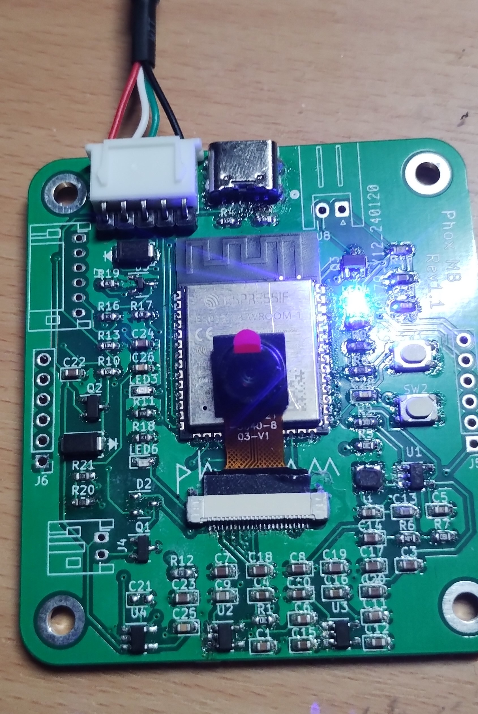
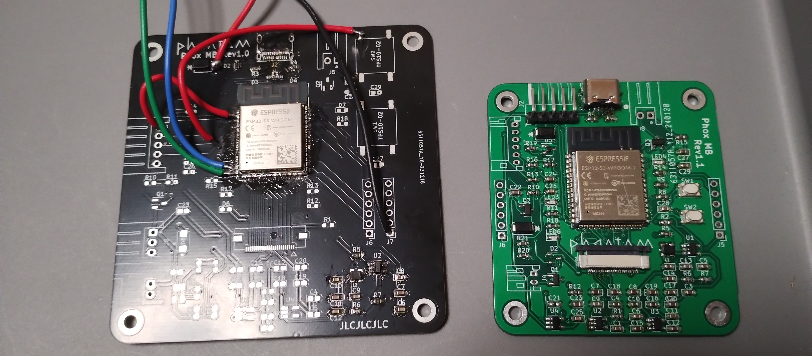
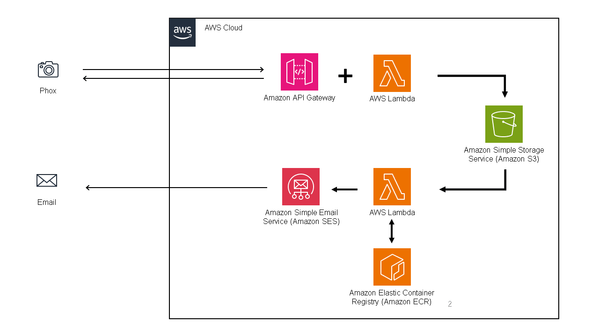
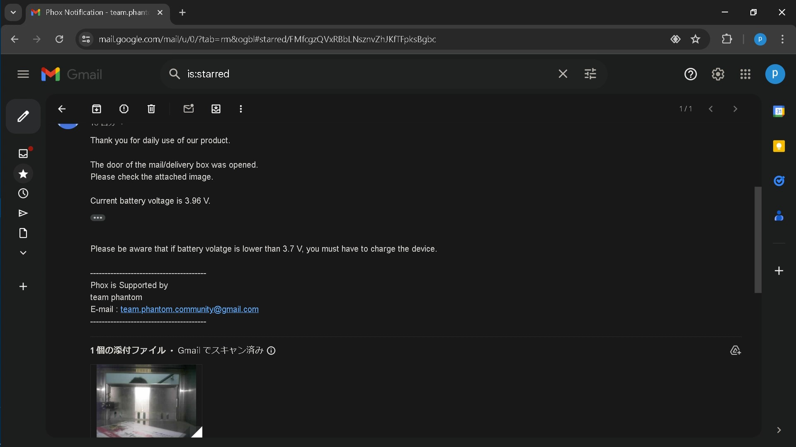

郵便受けの中を離れた場所から知る
郵便受けの開閉を検知し、内部の画像と投函物の種類をメールで知らせるデバイスです。カメラから基板、クラウド上の画像処理と通知まで、一連の仕組みを製作しました。 この作品は、team phantomでの企画から製作まで私が担当しました。
小型のカメラ基板を設計
ESP32-S3とOV5640カメラを使い、4層のメイン基板を自作。旧基板に比べて面積を約50%削減しました。磁気センサーと測距センサーを備えるドア側のサブモジュールも3cm×2cm以下に収めています。
画像認識からメール通知まで
撮影画像をAWS S3に保存し、XGBoostを使ったモデルで空・書類・荷物の3種類に分類。開閉、分類結果、バッテリー電圧をメールで知らせます。元の記録では一般的な暗室型郵便受けで約95%の認識精度としていますが、精度は環境に依存します。
大会での結果
iCAN 2024国内予選で1位、世界大会でThird Prizeを受賞しました。世界大会のThird Prizeは参加全チームに授与されたものです。ハードウェアの小型化とクラウドをつないだシステムを大会で発表しました。
制作の記録



